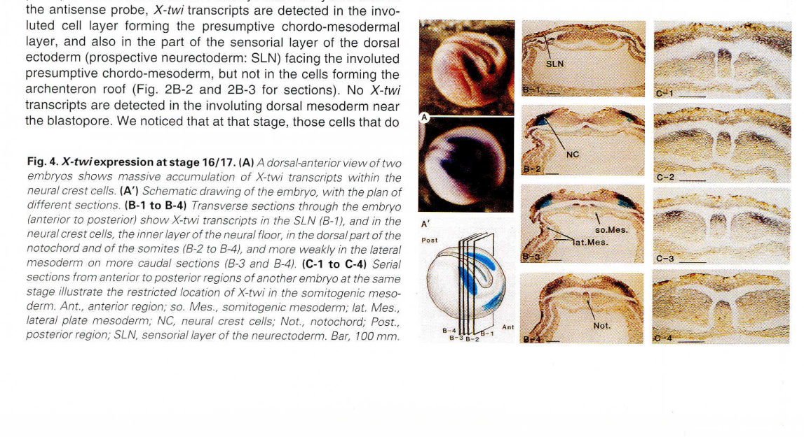

Twist1 (X-twi) is a class B basic helix-loop-helix transcription factor that binds E-box DNA motifs as a homodimer or as a heterodimer with E proteins, and carries a conserved C-terminal WR domain (Twist box) that mediates protein-protein interactions. In Xenopus it is expressed from early gastrula in axial and lateral plate mesoderm and, from neural plate stage 14, in the cranial neural crest, where it is maintained through migration into the pharyngeal arches. In the crest it is activated downstream of the neural plate border specifier Pax3, later than the earliest crest specifiers, and it is required for normal crest specifier expression (snai2, sox10); in its absence cells remain in a border-like state. It also biases cranial crest toward chondrogenic ectomesenchyme (Sox9, head cartilage) at the expense of glial fate. Part of this activity works through direct WR-domain binding to Snail1/Snail2, which inhibits Snail2 chromatin recruitment and activity and is regulated by GSK3-beta phosphorylation. Twist is an ancestral mesodermal mesenchyme determinant; its expression in the neural crest is thought to reflect co-option during vertebrate origins, and in the tunicate Ciona ectopic Twist converts a pigment-cell lineage into migratory mesenchyme.
| GO Term | Evidence | Action | Reason |
|---|---|---|---|
|
GO:0000977
RNA polymerase II transcription regulatory region sequence-specific DNA binding
|
IBA
GO_REF:0000033 |
ACCEPT |
Summary: Twist1 is a bHLH factor whose basic region recognises E-box (CANNTG) motifs in Pol II regulatory regions as a homodimer or E-protein heterodimer. The IBA reflects a PAINT node covering the Twist/bHLH clade with extensive experimental grounding in mouse and human orthologs.
Reason: Sequence-specific E-box binding is the conserved molecular basis of Twist activity and the frog protein has an intact TWIST1 bHLH domain. No Xenopus-specific DNA-binding or ChIP data were found, but nothing argues for loss of the activity, so the phylogenetic inference is accepted.
Supporting Evidence:
PMID:23443570
Twist possesses a basic domain that can interact with core Ebox sequence
file:XENLA/twist1/twist1-uniprot.txt
Efficient DNA binding requires dimerization with another bHLH
|
|
GO:0000977
RNA polymerase II transcription regulatory region sequence-specific DNA binding
|
IEA
GO_REF:0000118 |
ACCEPT |
Summary: TreeGrafter IEA duplicate of the IBA E-box/Pol II regulatory region DNA-binding annotation.
Reason: Same assertion as the IBA, consistent with the conserved bHLH domain; accepted.
Supporting Evidence:
PMID:23443570
Twist possesses a basic domain that can interact with core Ebox sequence
|
|
GO:0000981
DNA-binding transcription factor activity, RNA polymerase II-specific
|
IBA
GO_REF:0000033 |
ACCEPT |
Summary: Pol II-specific DNA-binding transcription factor activity inherited from the Twist/bHLH clade.
Reason: Twist is a sequence-specific bHLH transcription factor; this is the core MF. In the frog neural crest it also acts by binding other transcription factors (Snail1/2), captured separately as a NEW transcription regulator inhibitor activity, but the DNA-binding TF activity remains the primary molecular function. Direction (activation vs repression) is context dependent in the family, so the neutral term is appropriate.
Supporting Evidence:
PMID:23443570
Twist possesses a basic domain that can interact with core Ebox sequence
PMID:23443570
domain that mediates homodimerization or dimerization with E12/E47
|
|
GO:0000981
DNA-binding transcription factor activity, RNA polymerase II-specific
|
IEA
GO_REF:0000120 |
ACCEPT |
Summary: Combined IEA (InterPro IPR047093 TWIST1 bHLH and PANTHER) duplicate of the IBA.
Reason: Consistent with domain architecture and the IBA; accepted.
Supporting Evidence:
PMID:23443570
Twist possesses a basic domain that can interact with core Ebox sequence
|
|
GO:0005634
nucleus
|
IBA
GO_REF:0000033 |
ACCEPT |
Summary: Nuclear localisation inferred phylogenetically for the Twist clade.
Reason: A bHLH transcription factor that binds chromatin (Twist reduces Snail2 chromatin recruitment in frog embryos) acts in the nucleus. Endogenous frog protein localisation has not been imaged, but the inference is sound.
Supporting Evidence:
file:XENLA/twist1/twist1-uniprot.txt
SUBCELLULAR LOCATION: Nucleus.
PMID:23443570
Twist diminishes recruitment of Snail2 to chromatin
|
|
GO:0005634
nucleus
|
IEA
GO_REF:0000044 |
ACCEPT |
Summary: UniProt subcellular-location keyword mapping to nucleus.
Reason: Consistent with the IBA and the transcription factor function.
Supporting Evidence:
file:XENLA/twist1/twist1-uniprot.txt
SUBCELLULAR LOCATION: Nucleus.
|
|
GO:0006357
regulation of transcription by RNA polymerase II
|
IBA
GO_REF:0000033 |
ACCEPT |
Summary: Regulation of transcription by RNA polymerase II, inherited from the Twist/bHLH clade.
Reason: Correct general process for a Pol II-specific sequence-specific transcription factor. Xenopus perturbations change expression of crest genes (sox9, sox10, snai2, foxd3), although direct targets in frog are not defined, so the general unsigned term is the appropriate level.
Supporting Evidence:
PMID:23443570
domain that mediates homodimerization or dimerization with E12/E47
PMID:23443570
strongly suggesting that the loss of gene expression reflects altered cell specification as opposed to the death of specific cell populations
|
|
GO:0006357
regulation of transcription by RNA polymerase II
|
IEA
GO_REF:0000118 |
ACCEPT |
Summary: TreeGrafter IEA duplicate of the IBA regulation of Pol II transcription annotation.
Reason: Same as IBA; accepted.
Supporting Evidence:
PMID:23443570
domain that mediates homodimerization or dimerization with E12/E47
|
|
GO:0014029
neural crest formation
|
TAS
PMID:15242799 Cardiac neural crest ablation alters Id2 gene expression in ... |
MODIFY |
Summary: TAS from a cardiac neural crest ablation/Id2 paper (abstract-only in cache; the abstract does not mention Twist, which was presumably used as a crest marker). The underlying biology is, however, well supported by later Xenopus loss-of-function data (Lander et al. 2013).
Reason: Twist1 is genuinely required for cranial neural crest development in Xenopus: NC-targeted MO reduces snai1/2 and strongly reduces sox10, expands the zic1 border domain, without apoptosis or proliferation changes, and is rescued by MO-resistant Twist. Network placement: twist1 is downstream of the border specifier Pax3 (immediate-early, Zic1-independent), switches on at stage 14 after the earliest specifiers, and its loss stalls cells in a border state; it is therefore a (late, cranial-restricted) neural crest specifier, not a border specifier. GO:0014029 neural crest formation is defined as formation of the specialised ectodermal region between neural and non-neural ectoderm, which is closer to the border layer, so, consistent with the sibling sox10 review, the annotation is refined to the child neural crest cell fate specification. The reference itself is weak (see reference_review) but removal is not justified given strong independent evidence.
Proposed replacements:
neural crest cell fate specification
Supporting Evidence:
PMID:23443570
Importantly, the effects of Twist depletion can be rescued by a form of Twist that cannot be targeted by the MO
PMID:23443570
suggesting that the cells that did not express NC markers were stalled in a NPB state and/or adopted alternative fates, such as placodes
PMID:23443570
strongly suggesting that the loss of gene expression reflects altered cell specification as opposed to the death of specific cell populations
PMID:23443570
Twist expression is first detectable in NC precursor cells at stage 14, considerably later than several other NC specifiers, including Snail1, Snail2, Sox9 and Foxd3, indicating that it is unlikely to be a regulatory input into the initial expression of these factors
PMID:24360906
Twist1 was neither activated by Zic1 alone, nor downregulated by Zic1 knock-down in vivo, suggesting that twist is regulated by Pax3 only.
file:XENLA/twist1/twist1-deep-research-falcon.md
Both too little and ectopic excess Twist disturbed normal neural-crest development: its effect is dosage- and context-dependent.
|
|
GO:0032502
developmental process
|
IBA
GO_REF:0000033 |
KEEP AS NON CORE |
Summary: Very general developmental process term from the bHLH clade PAINT node.
Reason: Developmental process is correctly inherited from the broad bHLH clade node (Twist, Hand, Paraxis/Scleraxis and relatives), which spans mesodermal as well as neural crest roles, so it is kept as a true but non-specific annotation rather than converted into a single neural crest term. Twist1's specific roles are captured separately: restraint of Snai2 during neural crest fate specification (GO:0140416, GO:0014036) and steering cranial crest toward chondrogenic ectomesenchyme (GO:0048701), both in core_functions and as distinct parts of the neural crest gene regulatory network module (modules/neural_crest_gene_regulatory_network.yaml). Mesodermal developmental roles (the ancestral Twist role) are plausible but lack Xenopus functional data.
Propagation Review
Root cause:
TERM SCOPING PROBLEM
Failure modes:
GRANULARITY MISMATCH
Sources checked:
PANTHER:PTN002360678
SUPPORTS TRANSFER
Broad bHLH clade node (Twist, Hand, Paraxis/Scleraxis and relatives). A developmental role is correctly inherited, but at a level too general to say what Twist1 does; the gene-specific role is neural crest specification and cranial ectomesenchyme.
Supporting Evidence:
PMID:23443570
Importantly, the effects of Twist depletion can be rescued by a form of Twist that cannot be targeted by the MO
PMID:23443570
suggesting that the cells that did not express NC markers were stalled in a NPB state and/or adopted alternative fates, such as placodes
PMID:23443570
At stage 28, injected embryos exhibited reduced expression of Sox9 in the branchial arches, where it marks developing chondrocytes (Fig. 1f) and by stage 43 profound defects in cartilage formation and morphogenesis were observed
|
|
GO:0032502
developmental process
|
IEA
GO_REF:0000118 |
KEEP AS NON CORE |
Summary: TreeGrafter IEA duplicate of the general developmental process IBA.
Reason: Same assessment as the IBA row: developmental process is correctly inherited at the bHLH family level and is kept as a true but non-specific annotation. The gene-specific roles (Snai2 restraint in neural crest specification; cranial ectomesenchyme) are captured in core_functions and in the neural crest gene regulatory network module rather than by narrowing this broad row.
Supporting Evidence:
PMID:23443570
Importantly, the effects of Twist depletion can be rescued by a form of Twist that cannot be targeted by the MO
PMID:23443570
suggesting that the cells that did not express NC markers were stalled in a NPB state and/or adopted alternative fates, such as placodes
PMID:23443570
At stage 28, injected embryos exhibited reduced expression of Sox9 in the branchial arches, where it marks developing chondrocytes (Fig. 1f) and by stage 43 profound defects in cartilage formation and morphogenesis were observed
|
|
GO:0046983
protein dimerization activity
|
IEA
GO_REF:0000002 |
ACCEPT |
Summary: InterPro HLH-domain mapping to protein dimerization activity.
Reason: The HLH domain mediates homodimerization and heterodimerization with E proteins (E12/E47), which is required for efficient DNA binding; this is a real, structurally grounded activity of the bHLH domain. The more specific heterodimerization term is not used because frog-specific E-protein dimerization was not tested.
Supporting Evidence:
PMID:23443570
domain that mediates homodimerization or dimerization with E12/E47
file:XENLA/twist1/twist1-uniprot.txt
Efficient DNA binding requires dimerization with another bHLH
|
|
GO:0140416
transcription regulator inhibitor activity
|
IDA
PMID:23443570 Interactions between Twist and other core epithelial-mesench... |
NEW |
Summary: Through its C-terminal WR domain (Twist box) Xenopus Twist1 binds Snail1 and Snail2 directly, reduces Snail2 recruitment to chromatin, and (when phosphorylated at GSK3-beta site S148) blocks Snail2-induced ectopic neural crest formation.
Reason: This is a second, frog-demonstrated molecular activity that explains the stoichiometry-sensitive gain- and loss-of-function phenotypes and links Twist to Snail2 in the crest EMT/specifier unit. Direct binding (GST pulldown), reduced chromatin occupancy of the partner, and functional inhibition of the partner's activity together meet the definition of transcription regulator inhibitor activity better than a bare binding term. The same WR-domain mechanism (inhibition of Runx2, Sox9) is documented for mammalian Twist1.
Supporting Evidence:
PMID:23443570
Glutathione S-transferase (GST)-pulldown assays indicate that the interaction between Twist and Snail2 is direct
PMID:23443570
Twist diminishes recruitment of Snail2 to chromatin
PMID:23443570
Snail2 expression induces ectopic NC formation in this assay, and while TwistS148D potently blocked its effects, TwistS148A did not
PMID:23443570
Collectively, our data suggested a model in which Twist binds to and inhibits the activity of Snail proteins
|
|
GO:0048701
embryonic cranial skeleton morphogenesis
|
IMP
PMID:23443570 Interactions between Twist and other core epithelial-mesench... |
NEW |
Summary: Twist1 acting in cranial neural crest biases crest toward chondrogenic (ectomesenchymal) fate; NC-targeted depletion reduces Sox9 in the branchial arches and causes profound head cartilage defects at stage 43, with a reciprocal increase in Foxd3+ presumptive glia; gain of function has the opposite effect.
Reason: Participation: Twist1 is a transcription factor acting within the cranial crest cells that build the head skeleton, determining their chondrogenic fate, so it does part of the work rather than being merely required. The finding is reproduced with the S148A phospho-mutant (malformed facial cartilage) and is conserved: mouse Twist1 null embryos have malformed branchial arches and facial primordia, and mouse Twist1 carries this term. Tetrapod and Ciona data tie Twist specifically to ectomesenchyme. This is the main derivative-level role of the gene in the crest and is kept separate from specification.
Supporting Evidence:
PMID:23443570
At stage 28, injected embryos exhibited reduced expression of Sox9 in the branchial arches, where it marks developing chondrocytes (Fig. 1f) and by stage 43 profound defects in cartilage formation and morphogenesis were observed
PMID:23443570
suggesting that in the absence of Twist, cranial NC cells that would normally give rise to cartilage might instead adopt glial fates
PMID:23443570
mice have severe defects in cephalic neural tube closure and malformed branchial arches and facial primordium
PMID:23135395
In tetrapods, it appears that only the cephalic neural crest expresses Twist and produces ectomesenchyme
|
Q: GO has no neural plate border specification/formation term, and GO:0014029 neural crest formation is defined as formation of the border ectoderm region. Should a border term be created so that border specifiers (pax3, zic1, msx1, tfap2a) and late crest specifiers such as twist1 (Pax3-dependent, onset stage 14, loss expands zic1) can be separated cleanly?
Q: Twist is classed as a crest specifier in Xenopus and zebrafish but its early crest expression is lost in amniotes. Should the specification annotation (GO:0014036) be restricted to anamniote Twist orthologs, with the ectomesenchyme/cranial skeleton role as the conserved vertebrate function?
Q: GO lacks a term for neural crest-derived ectomesenchyme formation or cranial crest fate diversification (cartilage vs glia). Is a term such as 'ectomesenchymal cell fate commitment' warranted for Twist, given the Ciona a9.49 reprogramming result?
Q: Which genes are direct Twist1 (Twist-E protein heterodimer) targets in the Xenopus cranial crest, and does Twist regulate sox9 directly or only by restraining Snail2?
Q: Does Twist1 have a functional role in Xenopus mesoderm (its first and ancestral expression domain), or is that role redundant with other bHLH factors in frog?
Experiment: CUT&RUN for tagged Twist1 and E47 in dissected cranial neural folds and arch crest (stages 17-28), combined with Twist morphant/F0 CRISPR RNA-seq.
Hypothesis: Twist1 directly occupies E-box enhancers of chondrogenic ectomesenchyme genes (e.g. sox9, runx2) in Xenopus cranial crest.
Type: genomic binding assay
Experiment: F0 CRISPR twist1.L/.S knockout or hormone-inducible dominant-negative Twist applied after stage 14, assaying sox10/snai2 at neurula and sox9/cartilage versus foxd3/glia at stage 28-45.
Hypothesis: Twist1 is needed in the crest for ectomesenchyme but not for crest induction per se.
Type: genetic perturbation
Experiment: Test lamprey Twist expression timing and knockdown in cranial crest; compare with Ciona a9.49 Twist misexpression and amphioxus neural border Twist expression.
Hypothesis: Twist co-option into the crest was the step that conferred ectomesenchymal potential in vertebrates.
Type: comparative evolutionary analysis
The research report should be a detailed narrative explaining the function, biological processes, and localization of the gene product. Citations should be given for all claims.
You should prioritize authoritative reviews and primary scientific literature when conducting research. You can supplement
this with annotations you find in gene/protein databases, but these can be outdated or inaccurate.
We are specifically interested in the primary function of the gene - for enzymes, what reaction is catalyzed, and what is the substrate specificity? For transporters, what is the substrate? For structural proteins or adapters, what is the broader structural role? For signaling molecules, what is the role in the pathway.
We are interested in where in or outside the cell the gene product carries out its function.
We are also interested in the signaling or biochemical pathways in which the gene functions. We are less interested in broad pleiotropic effects, except where these elucidate the precise role.
Include evidence where possible. We are interested in both experimental evidence as well as inference from structure, evolution, or bioinformatic analysis. Precise studies should be prioritized over high-throughput, where available.
The requested protein is the African clawed frog (Xenopus laevis) Twist-related protein, UniProt P13903, encoded by twist1 and also called X-twi/X-twist; T18 and xtwi are aliases supplied with the accession. The original frog sequence was described as twist-related, and subsequent comparison of vertebrate sequences and embryonic expression supported calling X-twi a vertebrate Twist homolog. This is not an annotation of human TWIST1, zebrafish twist1 paralogs, or the related Twist-family factor Paraxis. (stoetzel2004xtwiisexpressed pages 7-8)
Its primary molecular role is transcriptional regulation, not catalysis, transport, or extracellular structural support. The supplied UniProt annotation identifies a basic helix–loop–helix (bHLH) DNA-binding domain, consistent with the literature’s description of a basic region recognizing E-box DNA motifs (CANNTG) and a helix–loop–helix region enabling dimerization with another Twist molecule or an E protein such as E12/E47. A separate conserved carboxy-terminal WR domain, or Twist box, mediates regulatory protein interactions. DNA-recognition capability does not establish which endogenous X. laevis genes are direct Twist-bound targets; the clearest frog-specific mechanistic experiments instead concern its interaction with Snail factors and its effect on neural-crest fate. (lander2013interactionsbetweentwist pages 2-4, lander2013interactionsbetweentwist pages 4-5)
The best-supported developmental assignment is control of cranial neural-crest formation and differentiation, particularly the balance between craniofacial cartilage-associated and alternative neural-crest programs. This is more precise than describing Twist simply as a universal switch for epithelial–mesenchymal transition (EMT) or cell migration. Its expression in mesoderm and somites indicates additional developmental contexts, but the evidence reviewed here is strongest for its neural-crest role. (lander2013interactionsbetweentwist pages 2-4, lander2013interactionsbetweentwist pages 5-7, stoetzel2004xtwiisexpressed pages 4-5)
Stoetzel and colleagues detected X-twi RNA, not protein, in unfertilized eggs and before gastrulation; signal increased from approximately embryonic stages 8–9. Their RT-PCR assessment assigned 49% of detected egg X-twi signal to the animal quarter, 28% to the equatorial half, and 23% to the vegetal quarter under their sampling scheme. These are regional RNA measurements, not protein abundances or a measure of developmental importance. At stages 13–14, transcripts appeared in presumptive neural and mesodermal territories, including the prechordal region and forming notochord. They became prominent in cranial neural crest around stages 16–17, marked migrating cephalic crest around stages 22–23, and were subsequently detected in branchial arches and somitic tissues. Expression persisted in embryos experimentally dorsalized with LiCl or ventralized by UV treatment, suggesting that initial expression does not require normal dorsal–ventral mesoderm regionalization; these experiments do not establish what the early RNA does. The journal article itself is printed as 1998, although some searchable metadata assign it a later year. (stoetzel2004xtwiisexpressed pages 3-4, stoetzel2004xtwiisexpressed pages 4-5, stoetzel2004xtwiisexpressed pages 1-2, stoetzel2004xtwiisexpressed pages 6-7)
The original study’s Figure 4 documents the especially strong stage-16/17 neural-crest mRNA signal in whole embryos and sections. It should not be interpreted as immunolocalization of Twist protein. (stoetzel2004xtwiisexpressed pages 4-5, stoetzel2004xtwiisexpressed media 9f9c5545)
Subcellular location: a bHLH factor that recognizes genomic regulatory DNA and influences chromatin recruitment is expected to perform its principal transcriptional function in the nucleus of expressing cells. However, the frog studies retrieved here do not establish an endogenous P13903 protein distribution by nuclear/cytoplasmic staining. Embryonic in situ hybridization identifies transcript-bearing cells, not the protein’s compartment. No extracellular site, membrane-transporter role, or catalytic substrate is supported. (lander2013interactionsbetweentwist pages 9-9, lander2013interactionsbetweentwist pages 2-4, stoetzel2004xtwiisexpressed pages 4-5)
In the most informative X. laevis perturbation study, Lander and colleagues delivered a translation-blocking Twist morpholino into a prospective neural-crest blastomere. Depletion diminished neural-crest Snail1/Snail2 expression, markedly reduced Sox9 and Sox10, expanded the neural-border marker Zic1, and impaired later cranial cartilage. At later stages, loss of the cartilage-associated marker Sox9 was accompanied by increased expression of the glial-associated marker Foxd3. Importantly, a morpholino-resistant Twist construct rescued Sox9 expression, strengthening the causal attribution to Twist depletion. Both too little and ectopic excess Twist disturbed normal neural-crest development: its effect is dosage- and context-dependent. Marker changes indicate altered developmental programs; they should not automatically be called direct Twist transcriptional targets. (lander2013interactionsbetweentwist pages 2-4, lander2013interactionsbetweentwist pages 1-2)
Co-immunoprecipitation showed that frog Twist interacts with Snail1 and Snail2 through its WR domain; removing that domain prevents normal Snail binding and produces neural-crest phenotypes resembling Twist depletion. The interaction can reduce Snail2 recruitment to E-box-containing chromatin, even though it does not simply abolish Twist dimerization or DNA-binding capacity. Twist therefore does not act solely as an isolated DNA-binding switch: it also regulates the activity of another set of developmental transcription factors. The study does not support the blanket claim that Twist transcriptionally represses both snail genes: their expression responses depend on experimental context. (lander2013interactionsbetweentwist pages 4-5, lander2013interactionsbetweentwist pages 4-4, lander2013interactionsbetweentwist pages 9-9)
GSK3β phosphorylation provides a regulatory connection to signaling. Kinase assays and LiCl-sensitive phosphorylation in embryo extracts support phosphorylation of the Twist carboxy-terminal region. Substituting serine 148 with nonphosphorylatable alanine weakened Snail2 binding, reduced cartilage-associated Sox9, and increased Foxd3/Sox10; a phosphomimetic aspartate substitution had substantially different, often opposite, effects. Wnt8 expression reduced Twist–Snail2 association, consistent with inhibition of GSK3 activity. These assays establish a plausible Wnt–GSK3–Twist/Snail regulatory interface in the experimental system; they do not show that every Wnt effect on frog neural crest is mediated by Twist. (lander2013interactionsbetweentwist pages 5-7, lander2013interactionsbetweentwist pages 7-8, lander2013interactionsbetweentwist pages 8-9)
At the upstream end of the neural-crest gene-regulatory network, Pax3 promotes twist1 expression. In X. laevis animal-cap experiments, induced Pax3 activated twist1 despite blockade of new protein synthesis, and Pax3 depletion decreased twist1 in embryos. Zic1 alone neither induced it in that assay nor was required for its measured expression in vivo. Thus twist1 is an immediate-early, potentially direct Pax3-responsive gene in these conditions—not a demonstrated direct Zic1 target. Direct Pax3 occupancy of a frog twist1 regulatory sequence was not established by those particular experiments; Pax3/Zic1 binding assays in the paper examined other loci. A separate Pax3/Zic1 animal-cap screen also recovered twist among downstream neural-crest genes. The broader FGF/Wnt/BMP neural-border signaling framework supplies context for Pax3 induction, but does not by itself demonstrate ligand-to-Twist specificity. (plouhinec2014pax3andzic1 pages 4-8, bae2014identificationofpax3 pages 1-2, plouhinec2014pax3andzic1 pages 1-2)
Taken together, the experimentally supported pathway-level description is neural-border regulation → Pax3-responsive twist1 expression → Twist-dependent neural-crest gene programs and WR-domain interactions with Snail1/Snail2, with GSK3-sensitive phosphorylation modulating the latter interactions. This is a transcriptional and cell-fate regulatory role rather than a claim that Twist itself secretes a signal or drives cell movement directly. (plouhinec2014pax3andzic1 pages 4-8, lander2013interactionsbetweentwist pages 2-4, lander2013interactionsbetweentwist pages 5-7)
A 2024 single-cell and validation study placed twist1 in later premigratory and ectomesoderm-associated neural-crest states. Its discovery single-cell series resequenced whole ** X. tropicalis ** embryos; X. laevis neural-border/crest explants provided part of the experimental network validation. In the latter, TFAP2e knockdown reduced 586 genes overall, including twist1. The number 586 describes the whole affected gene set, not a twist1-specific effect size, and the authors did not directly knock down Twist in that test. Its reported 16 neural-crest transcriptional states concern the wider dataset, not 16 Twist-defined populations. This mixed-species design makes species identification indispensable when annotating P13903. (kotov2024atimeresolvedsinglecell pages 1-2, kotov2024atimeresolvedsinglecell pages 2-3, kotov2024atimeresolvedsinglecell pages 4-5)
In another 2024 comparison, X. laevis twist1 transcript abundance increased across sampled blastula-to-neural-crest stages, unlike the corresponding lamprey expression trajectory. The reported cross-species correlations—r = 0.60 at blastula and r = 0.28–0.29 in sampled neural-crest stages—describe broader transcriptomic comparisons, not Twist-specific measurements. The expression difference suggests developmental-network evolution but does not establish a different biochemical function or functional requirement for Twist. (york2024sharedfeaturesof pages 4-6, york2024sharedfeaturesof pages 3-4, york2024sharedfeaturesof pages 1-3)
A practical implementation is whole-mount twist1 RNA in situ hybridization as a readout of cranial neural-crest populations and pharyngeal-arch streams. For example, a X. laevis Hmgn1-depletion study measured fewer twist1-positive cells and altered crest-stream extension alongside other neural-crest readouts. A changed twist1 stain under another gene’s perturbation is evidence about the marked cell population or its transcriptional state—not proof that Twist directly caused the observed movement defect. Nor do these developmental experiments constitute a demonstrated therapeutic application of the frog protein. (ihewulezi2021functionofchromatin pages 1-2, ihewulezi2021functionofchromatin pages 6-7)
The distinction between RNA expression, protein activity, and fate remains important. A 2026 vertebrate comparative study proposed that destabilization through an AU-rich Twist1 3′ UTR can delay transcript accumulation despite earlier enhancer activity, favoring later ectomesenchymal identity; its species-specific results should not be transferred to P13903 without confirming that the assayed sequence was the X. laevis locus. Likewise, a zebrafish Twist1–BMP/Id2a–FGF model is informative comparative biology, not direct experimental evidence for those precise interactions in this frog protein. (busby2026ectomesenchymalidentityemerges pages 1-2, busby2026ectomesenchymalidentityemerges pages 6-8)
The evidence by organism and method is summarized below. (lander2013interactionsbetweentwist pages 2-4, plouhinec2014pax3andzic1 pages 4-8, kotov2024atimeresolvedsinglecell pages 2-3)
| Study | Species and experimental test | Main twist1 finding | Interpretation and limitation |
|---|---|---|---|
| Stoetzel et al. (1998) | X. laevis RT-PCR and whole-mount/section in situ hybridization across embryonic stages | Maternal/early RNA was detected before gastrulation, increased from stages 8–9, and accumulated strongly in cranial neural crest at stages 16/17; later signal marked migrating cranial crest, branchial arches, somites and mesoderm. (stoetzel2004xtwiisexpressed pages 3-4, stoetzel2004xtwiisexpressed pages 4-5, stoetzel2004xtwiisexpressed pages 1-2) | Establishes when and where the transcript occurs, not protein localization or functional necessity. Early low-level RNA does not by itself prove an early developmental function. |
| Lander et al. (2013) | X. laevis targeted translation-blocking morpholino, morpholino-resistant rescue, gain-of-function, co-immunoprecipitation and phosphorylation-mutant assays | Depletion reduced neural-crest Sox9/Sox10 and impaired cranial cartilage; morpholino-resistant Twist rescued Sox9. The WR domain bound Snail1/2, and GSK3-regulated S148 substitutions shifted Sox9, Foxd3/Sox10 and cartilage outcomes. (lander2013interactionsbetweentwist pages 5-7, lander2013interactionsbetweentwist pages 2-4, lander2013interactionsbetweentwist pages 4-5) | Strongest organism-specific evidence that correctly dosed Twist is required for cranial neural-crest formation and fate diversification. The work supports protein interaction and phosphorylation mechanisms, but does not demonstrate endogenous protein subcellular localization or define a comprehensive set of direct DNA targets. |
| Plouhinec et al. (2014) | X. laevis animal-cap transcriptomics with inducible Pax3/Zic1, cycloheximide blockade of new protein synthesis, and in vivo morpholino validation | Pax3 induced twist1 despite translation blockade, and Pax3 depletion reduced it in vivo; Zic1 alone neither induced twist1 nor was required for its expression. (plouhinec2014pax3andzic1 pages 4-8) | Supports twist1 as an immediate-early, potentially direct Pax3 target. Direct Pax3 occupancy of a twist1 cis-regulatory element was not shown in the reported experiment, so “direct target” should remain qualified. |
| Kotov et al. (2024) | Discovery scRNA-seq used eight stages of whole X. tropicalis embryos; network validation used microdissected X. laevis neural-border/crest explants, morpholinos and ChIP-seq | twi1 marked ectomesoderm-associated and some post-EMT states. In X. laevis, TFAP2e depletion decreased 586 genes globally, including twist1, sox10, sncaip and fn1. (kotov2024atimeresolvedsinglecell pages 1-2, kotov2024atimeresolvedsinglecell pages 2-3, kotov2024atimeresolvedsinglecell pages 4-5) | Modern cell-state evidence places twist1 in later premigratory/EMT and ectomesodermal programs. The value 586 is the global downregulated-gene count, not a twist1-specific statistic; twist1 itself was not knocked down, and direct TFAP2e binding to its locus was not established. |
| York et al. (2024) | Comparative transcriptomics of X. laevis and sea lamprey blastula/neural-crest stages | twist1 increased monotonically from blastula through early and late neural-crest stages in X. laevis, unlike the lamprey trajectory. Reported cross-species correlations—blastula r=0.60, early crest r=0.28 and late crest r=0.29—apply to broader transcriptomic/GRN comparisons, not specifically to twist1. (york2024sharedfeaturesof pages 4-6, york2024sharedfeaturesof pages 1-3) | Supports evolutionary divergence in expression dynamics, not a frog-specific biochemical mechanism. There was no twist1-directed perturbation or rescue, so altered expression cannot establish altered functional requirement. |
Table: Organism- and method-resolved evidence for Xenopus twist1, separating direct functional tests from expression or network-level observations. Limitations prevent conflating global statistics, ortholog data, and direct twist1 mechanisms.
References
(stoetzel2004xtwiisexpressed pages 7-8): C. Stoetzel, A. Bolcato-Bellemin, P. Bourgeois, F. Perrin‐Schmitt, D. Meyer, M. Wolff, and P. Remy. X-twi is expressed prior to gastrulation in presumptive neurectodermal and mesodermal cells in dorsalized and ventralized xenopus laevis embryos. The International journal of developmental biology, 42 6:747-56, Sep 2004. URL: https://doi.org/10.1387/ijdb.9727830, doi:10.1387/ijdb.9727830. This article has 11 citations.
(lander2013interactionsbetweentwist pages 2-4): Rachel Lander, Talia Nasr, Stacy D. Ochoa, Kara Nordin, Maneeshi S. Prasad, and Carole LaBonne. Interactions between twist and other core epithelial–mesenchymal transition factors are controlled by gsk3-mediated phosphorylation. Nature Communications, Feb 2013. URL: https://doi.org/10.1038/ncomms2543, doi:10.1038/ncomms2543. This article has 100 citations and is from a highest quality peer-reviewed journal.
(lander2013interactionsbetweentwist pages 4-5): Rachel Lander, Talia Nasr, Stacy D. Ochoa, Kara Nordin, Maneeshi S. Prasad, and Carole LaBonne. Interactions between twist and other core epithelial–mesenchymal transition factors are controlled by gsk3-mediated phosphorylation. Nature Communications, Feb 2013. URL: https://doi.org/10.1038/ncomms2543, doi:10.1038/ncomms2543. This article has 100 citations and is from a highest quality peer-reviewed journal.
(lander2013interactionsbetweentwist pages 5-7): Rachel Lander, Talia Nasr, Stacy D. Ochoa, Kara Nordin, Maneeshi S. Prasad, and Carole LaBonne. Interactions between twist and other core epithelial–mesenchymal transition factors are controlled by gsk3-mediated phosphorylation. Nature Communications, Feb 2013. URL: https://doi.org/10.1038/ncomms2543, doi:10.1038/ncomms2543. This article has 100 citations and is from a highest quality peer-reviewed journal.
(stoetzel2004xtwiisexpressed pages 4-5): C. Stoetzel, A. Bolcato-Bellemin, P. Bourgeois, F. Perrin‐Schmitt, D. Meyer, M. Wolff, and P. Remy. X-twi is expressed prior to gastrulation in presumptive neurectodermal and mesodermal cells in dorsalized and ventralized xenopus laevis embryos. The International journal of developmental biology, 42 6:747-56, Sep 2004. URL: https://doi.org/10.1387/ijdb.9727830, doi:10.1387/ijdb.9727830. This article has 11 citations.
(stoetzel2004xtwiisexpressed pages 3-4): C. Stoetzel, A. Bolcato-Bellemin, P. Bourgeois, F. Perrin‐Schmitt, D. Meyer, M. Wolff, and P. Remy. X-twi is expressed prior to gastrulation in presumptive neurectodermal and mesodermal cells in dorsalized and ventralized xenopus laevis embryos. The International journal of developmental biology, 42 6:747-56, Sep 2004. URL: https://doi.org/10.1387/ijdb.9727830, doi:10.1387/ijdb.9727830. This article has 11 citations.
(stoetzel2004xtwiisexpressed pages 1-2): C. Stoetzel, A. Bolcato-Bellemin, P. Bourgeois, F. Perrin‐Schmitt, D. Meyer, M. Wolff, and P. Remy. X-twi is expressed prior to gastrulation in presumptive neurectodermal and mesodermal cells in dorsalized and ventralized xenopus laevis embryos. The International journal of developmental biology, 42 6:747-56, Sep 2004. URL: https://doi.org/10.1387/ijdb.9727830, doi:10.1387/ijdb.9727830. This article has 11 citations.
(stoetzel2004xtwiisexpressed pages 6-7): C. Stoetzel, A. Bolcato-Bellemin, P. Bourgeois, F. Perrin‐Schmitt, D. Meyer, M. Wolff, and P. Remy. X-twi is expressed prior to gastrulation in presumptive neurectodermal and mesodermal cells in dorsalized and ventralized xenopus laevis embryos. The International journal of developmental biology, 42 6:747-56, Sep 2004. URL: https://doi.org/10.1387/ijdb.9727830, doi:10.1387/ijdb.9727830. This article has 11 citations.
(stoetzel2004xtwiisexpressed media 9f9c5545): C. Stoetzel, A. Bolcato-Bellemin, P. Bourgeois, F. Perrin‐Schmitt, D. Meyer, M. Wolff, and P. Remy. X-twi is expressed prior to gastrulation in presumptive neurectodermal and mesodermal cells in dorsalized and ventralized xenopus laevis embryos. The International journal of developmental biology, 42 6:747-56, Sep 2004. URL: https://doi.org/10.1387/ijdb.9727830, doi:10.1387/ijdb.9727830. This article has 11 citations.
(lander2013interactionsbetweentwist pages 9-9): Rachel Lander, Talia Nasr, Stacy D. Ochoa, Kara Nordin, Maneeshi S. Prasad, and Carole LaBonne. Interactions between twist and other core epithelial–mesenchymal transition factors are controlled by gsk3-mediated phosphorylation. Nature Communications, Feb 2013. URL: https://doi.org/10.1038/ncomms2543, doi:10.1038/ncomms2543. This article has 100 citations and is from a highest quality peer-reviewed journal.
(lander2013interactionsbetweentwist pages 1-2): Rachel Lander, Talia Nasr, Stacy D. Ochoa, Kara Nordin, Maneeshi S. Prasad, and Carole LaBonne. Interactions between twist and other core epithelial–mesenchymal transition factors are controlled by gsk3-mediated phosphorylation. Nature Communications, Feb 2013. URL: https://doi.org/10.1038/ncomms2543, doi:10.1038/ncomms2543. This article has 100 citations and is from a highest quality peer-reviewed journal.
(lander2013interactionsbetweentwist pages 4-4): Rachel Lander, Talia Nasr, Stacy D. Ochoa, Kara Nordin, Maneeshi S. Prasad, and Carole LaBonne. Interactions between twist and other core epithelial–mesenchymal transition factors are controlled by gsk3-mediated phosphorylation. Nature Communications, Feb 2013. URL: https://doi.org/10.1038/ncomms2543, doi:10.1038/ncomms2543. This article has 100 citations and is from a highest quality peer-reviewed journal.
(lander2013interactionsbetweentwist pages 7-8): Rachel Lander, Talia Nasr, Stacy D. Ochoa, Kara Nordin, Maneeshi S. Prasad, and Carole LaBonne. Interactions between twist and other core epithelial–mesenchymal transition factors are controlled by gsk3-mediated phosphorylation. Nature Communications, Feb 2013. URL: https://doi.org/10.1038/ncomms2543, doi:10.1038/ncomms2543. This article has 100 citations and is from a highest quality peer-reviewed journal.
(lander2013interactionsbetweentwist pages 8-9): Rachel Lander, Talia Nasr, Stacy D. Ochoa, Kara Nordin, Maneeshi S. Prasad, and Carole LaBonne. Interactions between twist and other core epithelial–mesenchymal transition factors are controlled by gsk3-mediated phosphorylation. Nature Communications, Feb 2013. URL: https://doi.org/10.1038/ncomms2543, doi:10.1038/ncomms2543. This article has 100 citations and is from a highest quality peer-reviewed journal.
(plouhinec2014pax3andzic1 pages 4-8): Jean-Louis Plouhinec, Daniel D. Roche, Caterina Pegoraro, Ana Leonor Figueiredo, Frédérique Maczkowiak, Lisa J. Brunet, Cécile Milet, Jean-Philippe Vert, Nicolas Pollet, Richard M. Harland, and Anne H. Monsoro-Burq. Pax3 and zic1 trigger the early neural crest gene regulatory network by the direct activation of multiple key neural crest specifiers. Developmental biology, 386 2:461-72, Feb 2014. URL: https://doi.org/10.1016/j.ydbio.2013.12.010, doi:10.1016/j.ydbio.2013.12.010. This article has 150 citations and is from a peer-reviewed journal.
(bae2014identificationofpax3 pages 1-2): Chang-Joon Bae, Byung-Yong Park, Young-Hoon Lee, John W. Tobias, Chang-Soo Hong, and Jean-Pierre Saint-Jeannet. Identification of pax3 and zic1 targets in the developing neural crest. Developmental biology, 386 2:473-83, Feb 2014. URL: https://doi.org/10.1016/j.ydbio.2013.12.011, doi:10.1016/j.ydbio.2013.12.011. This article has 65 citations and is from a peer-reviewed journal.
(plouhinec2014pax3andzic1 pages 1-2): Jean-Louis Plouhinec, Daniel D. Roche, Caterina Pegoraro, Ana Leonor Figueiredo, Frédérique Maczkowiak, Lisa J. Brunet, Cécile Milet, Jean-Philippe Vert, Nicolas Pollet, Richard M. Harland, and Anne H. Monsoro-Burq. Pax3 and zic1 trigger the early neural crest gene regulatory network by the direct activation of multiple key neural crest specifiers. Developmental biology, 386 2:461-72, Feb 2014. URL: https://doi.org/10.1016/j.ydbio.2013.12.010, doi:10.1016/j.ydbio.2013.12.010. This article has 150 citations and is from a peer-reviewed journal.
(kotov2024atimeresolvedsinglecell pages 1-2): Aleksandr Kotov, Subham Seal, Mansour Alkobtawi, Vincent Kappès, Sofia Medina Ruiz, Hugo Arbès, Richard M. Harland, Leonid Peshkin, and Anne H. Monsoro-Burq. A time-resolved single-cell roadmap of the logic driving anterior neural crest diversification from neural border to migration stages. Proceedings of the National Academy of Sciences, Apr 2024. URL: https://doi.org/10.1073/pnas.2311685121, doi:10.1073/pnas.2311685121. This article has 26 citations and is from a highest quality peer-reviewed journal.
(kotov2024atimeresolvedsinglecell pages 2-3): Aleksandr Kotov, Subham Seal, Mansour Alkobtawi, Vincent Kappès, Sofia Medina Ruiz, Hugo Arbès, Richard M. Harland, Leonid Peshkin, and Anne H. Monsoro-Burq. A time-resolved single-cell roadmap of the logic driving anterior neural crest diversification from neural border to migration stages. Proceedings of the National Academy of Sciences, Apr 2024. URL: https://doi.org/10.1073/pnas.2311685121, doi:10.1073/pnas.2311685121. This article has 26 citations and is from a highest quality peer-reviewed journal.
(kotov2024atimeresolvedsinglecell pages 4-5): Aleksandr Kotov, Subham Seal, Mansour Alkobtawi, Vincent Kappès, Sofia Medina Ruiz, Hugo Arbès, Richard M. Harland, Leonid Peshkin, and Anne H. Monsoro-Burq. A time-resolved single-cell roadmap of the logic driving anterior neural crest diversification from neural border to migration stages. Proceedings of the National Academy of Sciences, Apr 2024. URL: https://doi.org/10.1073/pnas.2311685121, doi:10.1073/pnas.2311685121. This article has 26 citations and is from a highest quality peer-reviewed journal.
(york2024sharedfeaturesof pages 4-6): Joshua R. York, Anjali Rao, Paul B. Huber, Elizabeth N. Schock, Andrew Montequin, Sara Rigney, and Carole LaBonne. Shared features of blastula and neural crest stem cells evolved at the base of vertebrates. Nature ecology & evolution, 8:1680-1692, Jul 2024. URL: https://doi.org/10.1038/s41559-024-02476-8, doi:10.1038/s41559-024-02476-8. This article has 15 citations and is from a highest quality peer-reviewed journal.
(york2024sharedfeaturesof pages 3-4): Joshua R. York, Anjali Rao, Paul B. Huber, Elizabeth N. Schock, Andrew Montequin, Sara Rigney, and Carole LaBonne. Shared features of blastula and neural crest stem cells evolved at the base of vertebrates. Nature ecology & evolution, 8:1680-1692, Jul 2024. URL: https://doi.org/10.1038/s41559-024-02476-8, doi:10.1038/s41559-024-02476-8. This article has 15 citations and is from a highest quality peer-reviewed journal.
(york2024sharedfeaturesof pages 1-3): Joshua R. York, Anjali Rao, Paul B. Huber, Elizabeth N. Schock, Andrew Montequin, Sara Rigney, and Carole LaBonne. Shared features of blastula and neural crest stem cells evolved at the base of vertebrates. Nature ecology & evolution, 8:1680-1692, Jul 2024. URL: https://doi.org/10.1038/s41559-024-02476-8, doi:10.1038/s41559-024-02476-8. This article has 15 citations and is from a highest quality peer-reviewed journal.
(ihewulezi2021functionofchromatin pages 1-2): Chibuike Ihewulezi and Jean‐Pierre Saint‐Jeannet. Function of chromatin modifier hmgn1 during neural crest and craniofacial development. genesis, Sep 2021. URL: https://doi.org/10.1002/dvg.23447, doi:10.1002/dvg.23447. This article has 3 citations and is from a peer-reviewed journal.
(ihewulezi2021functionofchromatin pages 6-7): Chibuike Ihewulezi and Jean‐Pierre Saint‐Jeannet. Function of chromatin modifier hmgn1 during neural crest and craniofacial development. genesis, Sep 2021. URL: https://doi.org/10.1002/dvg.23447, doi:10.1002/dvg.23447. This article has 3 citations and is from a peer-reviewed journal.
(busby2026ectomesenchymalidentityemerges pages 1-2): Lara C. Busby, Jessica R. Patrick, Luke W. Lyons, Abby J. Bergman, and Megan L. Martik. Ectomesenchymal identity emerges via relief of twist1 transcript destabilisation. Nature Communications, Aug 2026. URL: https://doi.org/10.1038/s41467-026-76557-6, doi:10.1038/s41467-026-76557-6. This article has 0 citations and is from a highest quality peer-reviewed journal.
(busby2026ectomesenchymalidentityemerges pages 6-8): Lara C. Busby, Jessica R. Patrick, Luke W. Lyons, Abby J. Bergman, and Megan L. Martik. Ectomesenchymal identity emerges via relief of twist1 transcript destabilisation. Nature Communications, Aug 2026. URL: https://doi.org/10.1038/s41467-026-76557-6, doi:10.1038/s41467-026-76557-6. This article has 0 citations and is from a highest quality peer-reviewed journal.

Project: NEURAL_CREST_ORIGINS (Tier 1, neural crest specifier candidate).
id: P13903
gene_symbol: twist1
product_type: PROTEIN
status: COMPLETE
taxon:
id: NCBITaxon:8355
label: Xenopus laevis
description: Twist1 (X-twi) is a class B basic helix-loop-helix transcription factor that binds E-box DNA motifs
as a homodimer or as a heterodimer with E proteins, and carries a conserved C-terminal WR domain (Twist box) that
mediates protein-protein interactions. In Xenopus it is expressed from early gastrula in axial and lateral plate
mesoderm and, from neural plate stage 14, in the cranial neural crest, where it is maintained through migration
into the pharyngeal arches. In the crest it is activated downstream of the neural plate border specifier Pax3,
later than the earliest crest specifiers, and it is required for normal crest specifier expression (snai2, sox10);
in its absence cells remain in a border-like state. It also biases cranial crest toward chondrogenic ectomesenchyme
(Sox9, head cartilage) at the expense of glial fate. Part of this activity works through direct WR-domain binding
to Snail1/Snail2, which inhibits Snail2 chromatin recruitment and activity and is regulated by GSK3-beta phosphorylation.
Twist is an ancestral mesodermal mesenchyme determinant; its expression in the neural crest is thought to reflect
co-option during vertebrate origins, and in the tunicate Ciona ectopic Twist converts a pigment-cell lineage into
migratory mesenchyme.
existing_annotations:
- term:
id: GO:0000977
label: RNA polymerase II transcription regulatory region sequence-specific DNA binding
evidence_type: IBA
original_reference_id: GO_REF:0000033
qualifier: enables
supporting_entities:
- FB:FBgn0053557
- MGI:MGI:102934
- MGI:MGI:103580
- MGI:MGI:104664
- MGI:MGI:1202715
- MGI:MGI:1328312
- MGI:MGI:1333884
- MGI:MGI:1349421
- MGI:MGI:2150010
- MGI:MGI:98872
- PANTHER:PTN002360678
- RGD:1588254
- RGD:621709
- UniProtKB:O60682
- UniProtKB:O96004
- UniProtKB:P61296
- UniProtKB:Q15672
- UniProtKB:Q6QHK4
- UniProtKB:Q7RTU7
review:
summary: Twist1 is a bHLH factor whose basic region recognises E-box (CANNTG) motifs in Pol II regulatory regions
as a homodimer or E-protein heterodimer. The IBA reflects a PAINT node covering the Twist/bHLH clade with
extensive experimental grounding in mouse and human orthologs.
action: ACCEPT
reason: Sequence-specific E-box binding is the conserved molecular basis of Twist activity and the frog protein
has an intact TWIST1 bHLH domain. No Xenopus-specific DNA-binding or ChIP data were found, but nothing argues
for loss of the activity, so the phylogenetic inference is accepted.
supported_by:
- &id001
reference_id: PMID:23443570
supporting_text: Twist possesses a basic domain that can interact with core Ebox sequence
- &id009
reference_id: file:XENLA/twist1/twist1-uniprot.txt
supporting_text: Efficient DNA binding requires dimerization with another bHLH
- term:
id: GO:0000977
label: RNA polymerase II transcription regulatory region sequence-specific DNA binding
evidence_type: IEA
original_reference_id: GO_REF:0000118
qualifier: enables
supporting_entities:
- PANTHER:PTN009071143
review:
summary: TreeGrafter IEA duplicate of the IBA E-box/Pol II regulatory region DNA-binding annotation.
action: ACCEPT
reason: Same assertion as the IBA, consistent with the conserved bHLH domain; accepted.
supported_by:
- *id001
- term:
id: GO:0000981
label: DNA-binding transcription factor activity, RNA polymerase II-specific
evidence_type: IBA
original_reference_id: GO_REF:0000033
qualifier: enables
supporting_entities:
- FB:FBgn0032209
- FB:FBgn0053557
- MGI:MGI:102934
- MGI:MGI:103577
- MGI:MGI:103580
- MGI:MGI:104664
- MGI:MGI:1202715
- MGI:MGI:1328312
- MGI:MGI:1333884
- MGI:MGI:1349421
- MGI:MGI:2150010
- PANTHER:PTN002360678
- RGD:621207
- UniProtKB:O43680
- UniProtKB:O96004
- UniProtKB:P61296
- UniProtKB:Q15672
- UniProtKB:Q7RTU7
review:
summary: Pol II-specific DNA-binding transcription factor activity inherited from the Twist/bHLH clade.
action: ACCEPT
reason: Twist is a sequence-specific bHLH transcription factor; this is the core MF. In the frog neural crest
it also acts by binding other transcription factors (Snail1/2), captured separately as a NEW transcription
regulator inhibitor activity, but the DNA-binding TF activity remains the primary molecular function. Direction
(activation vs repression) is context dependent in the family, so the neutral term is appropriate.
supported_by:
- *id001
- &id003
reference_id: PMID:23443570
supporting_text: domain that mediates homodimerization or dimerization with E12/E47
- term:
id: GO:0000981
label: DNA-binding transcription factor activity, RNA polymerase II-specific
evidence_type: IEA
original_reference_id: GO_REF:0000120
qualifier: enables
supporting_entities:
- InterPro:IPR047093
- PANTHER:PTN009071143
review:
summary: Combined IEA (InterPro IPR047093 TWIST1 bHLH and PANTHER) duplicate of the IBA.
action: ACCEPT
reason: Consistent with domain architecture and the IBA; accepted.
supported_by:
- *id001
- term:
id: GO:0005634
label: nucleus
evidence_type: IBA
original_reference_id: GO_REF:0000033
qualifier: is_active_in
supporting_entities:
- FB:FBgn0003900
- FB:FBgn0032209
- MGI:MGI:102934
- MGI:MGI:103577
- MGI:MGI:103580
- MGI:MGI:104664
- MGI:MGI:1333884
- MGI:MGI:2150010
- MGI:MGI:98872
- PANTHER:PTN002360678
- RGD:621206
- RGD:621709
- UniProtKB:O43680
- UniProtKB:O60682
- UniProtKB:O96004
- UniProtKB:Q12870
- UniProtKB:Q15672
- UniProtKB:Q7RTU7
- UniProtKB:Q8WVJ9
- WB:WBGene00001954
- WB:WBGene00001956
- ZFIN:ZDB-GENE-051113-88
review:
summary: Nuclear localisation inferred phylogenetically for the Twist clade.
action: ACCEPT
reason: A bHLH transcription factor that binds chromatin (Twist reduces Snail2 chromatin recruitment in frog
embryos) acts in the nucleus. Endogenous frog protein localisation has not been imaged, but the inference
is sound.
supported_by:
- &id002
reference_id: file:XENLA/twist1/twist1-uniprot.txt
supporting_text: 'SUBCELLULAR LOCATION: Nucleus.'
- &id010
reference_id: PMID:23443570
supporting_text: Twist diminishes recruitment of Snail2 to chromatin
- term:
id: GO:0005634
label: nucleus
evidence_type: IEA
original_reference_id: GO_REF:0000044
qualifier: located_in
supporting_entities:
- UniProtKB-SubCell:SL-0191
review:
summary: UniProt subcellular-location keyword mapping to nucleus.
action: ACCEPT
reason: Consistent with the IBA and the transcription factor function.
supported_by:
- *id002
- term:
id: GO:0006357
label: regulation of transcription by RNA polymerase II
evidence_type: IBA
original_reference_id: GO_REF:0000033
qualifier: involved_in
supporting_entities:
- FB:FBgn0003900
- FB:FBgn0022740
- FB:FBgn0032209
- FB:FBgn0053557
- MGI:MGI:102934
- MGI:MGI:103577
- MGI:MGI:103580
- MGI:MGI:104664
- MGI:MGI:104685
- MGI:MGI:1202715
- MGI:MGI:1328312
- MGI:MGI:1333884
- MGI:MGI:1349421
- MGI:MGI:1934960
- MGI:MGI:2150010
- MGI:MGI:98872
- PANTHER:PTN002360678
- RGD:1588254
- UniProtKB:O43680
- UniProtKB:O96004
- UniProtKB:P61296
- UniProtKB:Q15672
- UniProtKB:Q7RTU7
- WB:WBGene00001953
- WB:WBGene00001954
review:
summary: Regulation of transcription by RNA polymerase II, inherited from the Twist/bHLH clade.
action: ACCEPT
reason: Correct general process for a Pol II-specific sequence-specific transcription factor. Xenopus perturbations
change expression of crest genes (sox9, sox10, snai2, foxd3), although direct targets in frog are not defined,
so the general unsigned term is the appropriate level.
supported_by:
- *id003
- &id004
reference_id: PMID:23443570
supporting_text: strongly suggesting that the loss of gene expression reflects altered cell specification
as opposed to the death of specific cell populations
- term:
id: GO:0006357
label: regulation of transcription by RNA polymerase II
evidence_type: IEA
original_reference_id: GO_REF:0000118
qualifier: involved_in
supporting_entities:
- PANTHER:PTN009071143
review:
summary: TreeGrafter IEA duplicate of the IBA regulation of Pol II transcription annotation.
action: ACCEPT
reason: Same as IBA; accepted.
supported_by:
- *id003
- term:
id: GO:0014029
label: neural crest formation
evidence_type: TAS
original_reference_id: PMID:15242799
qualifier: involved_in
review:
summary: TAS from a cardiac neural crest ablation/Id2 paper (abstract-only in cache; the abstract does not mention
Twist, which was presumably used as a crest marker). The underlying biology is, however, well supported by
later Xenopus loss-of-function data (Lander et al. 2013).
action: MODIFY
reason: 'Twist1 is genuinely required for cranial neural crest development in Xenopus: NC-targeted MO reduces
snai1/2 and strongly reduces sox10, expands the zic1 border domain, without apoptosis or proliferation changes,
and is rescued by MO-resistant Twist. Network placement: twist1 is downstream of the border specifier Pax3
(immediate-early, Zic1-independent), switches on at stage 14 after the earliest specifiers, and its loss stalls
cells in a border state; it is therefore a (late, cranial-restricted) neural crest specifier, not a border
specifier. GO:0014029 neural crest formation is defined as formation of the specialised ectodermal region
between neural and non-neural ectoderm, which is closer to the border layer, so, consistent with the sibling
sox10 review, the annotation is refined to the child neural crest cell fate specification. The reference itself
is weak (see reference_review) but removal is not justified given strong independent evidence.'
proposed_replacement_terms:
- id: GO:0014036
label: neural crest cell fate specification
additional_reference_ids:
- PMID:23443570
- PMID:24360906
supported_by:
- &id005
reference_id: PMID:23443570
supporting_text: Importantly, the effects of Twist depletion can be rescued by a form of Twist that cannot
be targeted by the MO
- &id006
reference_id: PMID:23443570
supporting_text: suggesting that the cells that did not express NC markers were stalled in a NPB state and/or
adopted alternative fates, such as placodes
- *id004
- &id013
reference_id: PMID:23443570
supporting_text: Twist expression is first detectable in NC precursor cells at stage 14, considerably later
than several other NC specifiers, including Snail1, Snail2, Sox9 and Foxd3, indicating that it is unlikely
to be a regulatory input into the initial expression of these factors
- &id012
reference_id: PMID:24360906
supporting_text: Twist1 was neither activated by Zic1 alone, nor downregulated by Zic1 knock-down in vivo,
suggesting that twist is regulated by Pax3 only.
- reference_id: file:XENLA/twist1/twist1-deep-research-falcon.md
supporting_text: 'Both too little and ectopic excess Twist disturbed normal neural-crest development: its
effect is dosage- and context-dependent.'
- term:
id: GO:0032502
label: developmental process
evidence_type: IBA
original_reference_id: GO_REF:0000033
qualifier: involved_in
supporting_entities:
- FB:FBgn0003900
- FB:FBgn0022740
- FB:FBgn0032209
- FB:FBgn0053557
- MGI:MGI:102934
- MGI:MGI:103577
- MGI:MGI:103580
- MGI:MGI:104664
- MGI:MGI:104685
- MGI:MGI:1202715
- MGI:MGI:1328312
- MGI:MGI:1333884
- MGI:MGI:2150010
- MGI:MGI:98872
- PANTHER:PTN002360678
- RGD:1588254
- RGD:620523
- RGD:621207
- RGD:621455
- RGD:621709
- UniProtKB:O96004
- UniProtKB:P59101
- UniProtKB:P61296
- UniProtKB:Q15672
- UniProtKB:Q6GNB7
- UniProtKB:Q7RTS3
- UniProtKB:Q7RTU1
- UniProtKB:Q90690
- WB:WBGene00001953
- WB:WBGene00001956
- WB:WBGene00001957
- WB:WBGene00001981
- ZFIN:ZDB-GENE-000210-6
- ZFIN:ZDB-GENE-000511-1
- ZFIN:ZDB-GENE-030131-2201
- ZFIN:ZDB-GENE-030616-579
- ZFIN:ZDB-GENE-031121-1
- ZFIN:ZDB-GENE-050417-357
- ZFIN:ZDB-GENE-051113-88
- ZFIN:ZDB-GENE-060503-414
- ZFIN:ZDB-GENE-090806-1
- ZFIN:ZDB-GENE-090806-3
review:
summary: Very general developmental process term from the bHLH clade PAINT node.
action: KEEP_AS_NON_CORE
reason: 'Developmental process is correctly inherited from the broad bHLH clade node (Twist, Hand, Paraxis/Scleraxis
and relatives), which spans mesodermal as well as neural crest roles, so it is kept as a true but non-specific
annotation rather than converted into a single neural crest term. Twist1''s specific roles are captured separately:
restraint of Snai2 during neural crest fate specification (GO:0140416, GO:0014036) and steering cranial crest
toward chondrogenic ectomesenchyme (GO:0048701), both in core_functions and as distinct parts of the neural crest
gene regulatory network module (modules/neural_crest_gene_regulatory_network.yaml). Mesodermal developmental
roles (the ancestral Twist role) are plausible but lack Xenopus functional data.'
supported_by: &id008
- *id005
- *id006
- &id011
reference_id: PMID:23443570
supporting_text: At stage 28, injected embryos exhibited reduced expression of Sox9 in the branchial arches,
where it marks developing chondrocytes (Fig. 1f) and by stage 43 profound defects in cartilage formation
and morphogenesis were observed
propagation_review:
root_cause: TERM_SCOPING_PROBLEM
failure_modes:
- GRANULARITY_MISMATCH
source_entities:
- source_id: PANTHER:PTN002360678
source_status: SUPPORTS_TRANSFER
comment: Broad bHLH clade node (Twist, Hand, Paraxis/Scleraxis and relatives). A developmental role is correctly
inherited, but at a level too general to say what Twist1 does; the gene-specific role is neural crest
specification and cranial ectomesenchyme.
- term:
id: GO:0032502
label: developmental process
evidence_type: IEA
original_reference_id: GO_REF:0000118
qualifier: involved_in
supporting_entities:
- PANTHER:PTN009071143
review:
summary: TreeGrafter IEA duplicate of the general developmental process IBA.
action: KEEP_AS_NON_CORE
reason: 'Same assessment as the IBA row: developmental process is correctly inherited at the bHLH family level
and is kept as a true but non-specific annotation. The gene-specific roles (Snai2 restraint in neural crest
specification; cranial ectomesenchyme) are captured in core_functions and in the neural crest gene regulatory
network module rather than by narrowing this broad row.'
supported_by: *id008
- term:
id: GO:0046983
label: protein dimerization activity
evidence_type: IEA
original_reference_id: GO_REF:0000002
qualifier: enables
supporting_entities:
- InterPro:IPR011598
- InterPro:IPR036638
review:
summary: InterPro HLH-domain mapping to protein dimerization activity.
action: ACCEPT
reason: The HLH domain mediates homodimerization and heterodimerization with E proteins (E12/E47), which is
required for efficient DNA binding; this is a real, structurally grounded activity of the bHLH domain. The
more specific heterodimerization term is not used because frog-specific E-protein dimerization was not tested.
supported_by:
- *id003
- *id009
- term:
id: GO:0140416
label: transcription regulator inhibitor activity
evidence_type: IDA
original_reference_id: PMID:23443570
review:
summary: Through its C-terminal WR domain (Twist box) Xenopus Twist1 binds Snail1 and Snail2 directly, reduces
Snail2 recruitment to chromatin, and (when phosphorylated at GSK3-beta site S148) blocks Snail2-induced ectopic
neural crest formation.
action: NEW
reason: This is a second, frog-demonstrated molecular activity that explains the stoichiometry-sensitive gain-
and loss-of-function phenotypes and links Twist to Snail2 in the crest EMT/specifier unit. Direct binding
(GST pulldown), reduced chromatin occupancy of the partner, and functional inhibition of the partner's activity
together meet the definition of transcription regulator inhibitor activity better than a bare binding term.
The same WR-domain mechanism (inhibition of Runx2, Sox9) is documented for mammalian Twist1.
supported_by:
- &id014
reference_id: PMID:23443570
supporting_text: Glutathione S-transferase (GST)-pulldown assays indicate that the interaction between Twist
and Snail2 is direct
- *id010
- &id015
reference_id: PMID:23443570
supporting_text: Snail2 expression induces ectopic NC formation in this assay, and while TwistS148D potently
blocked its effects, TwistS148A did not
- reference_id: PMID:23443570
supporting_text: Collectively, our data suggested a model in which Twist binds to and inhibits the activity
of Snail proteins
- term:
id: GO:0048701
label: embryonic cranial skeleton morphogenesis
evidence_type: IMP
original_reference_id: PMID:23443570
review:
summary: Twist1 acting in cranial neural crest biases crest toward chondrogenic (ectomesenchymal) fate; NC-targeted
depletion reduces Sox9 in the branchial arches and causes profound head cartilage defects at stage 43, with
a reciprocal increase in Foxd3+ presumptive glia; gain of function has the opposite effect.
action: NEW
reason: 'Participation: Twist1 is a transcription factor acting within the cranial crest cells that build the
head skeleton, determining their chondrogenic fate, so it does part of the work rather than being merely required.
The finding is reproduced with the S148A phospho-mutant (malformed facial cartilage) and is conserved: mouse
Twist1 null embryos have malformed branchial arches and facial primordia, and mouse Twist1 carries this term.
Tetrapod and Ciona data tie Twist specifically to ectomesenchyme. This is the main derivative-level role of
the gene in the crest and is kept separate from specification.'
supported_by:
- *id011
- &id016
reference_id: PMID:23443570
supporting_text: suggesting that in the absence of Twist, cranial NC cells that would normally give rise to
cartilage might instead adopt glial fates
- reference_id: PMID:23443570
supporting_text: mice have severe defects in cephalic neural tube closure and malformed branchial arches and
facial primordium
- reference_id: PMID:23135395
supporting_text: In tetrapods, it appears that only the cephalic neural crest expresses Twist and produces
ectomesenchyme
references:
- id: GO_REF:0000002
title: Gene Ontology annotation through association of InterPro records with GO terms
findings: []
- id: GO_REF:0000033
title: Annotation inferences using phylogenetic trees
findings: []
- id: GO_REF:0000044
title: Gene Ontology annotation based on UniProtKB/Swiss-Prot Subcellular Location vocabulary mapping, accompanied
by conservative changes to GO terms applied by UniProt
findings: []
- id: GO_REF:0000118
title: TreeGrafter-generated GO annotations
findings: []
- id: GO_REF:0000120
title: Combined Automated Annotation using Multiple IEA Methods
findings: []
- id: PMID:15242799
title: Cardiac neural crest ablation alters Id2 gene expression in the developing heart.
findings: []
reference_review:
relevance: LOW
correctness: UNVERIFIED
review_notes: "Suspected miscitation, not confirmable: the full text is not open access and not in PMC, and the cached abstract concerns Id2 expression after cardiac neural crest ablation without mentioning Twist. The same paper is the sole AgBase TAS source for neural crest formation on Xenopus snai1, snai2 and twist1, which suggests bulk attribution from an introductory statement; the source curator should check. The process claim is independently supported by experimental papers in this review. Superseded for Twist by PMID:23443570."
full_text_unavailable: true
- id: PMID:23443570
title: Interactions between Twist and other core epithelial-mesenchymal transition factors are controlled by GSK3-mediated
phosphorylation.
findings:
- statement: Twist is required for cranial NC specifier expression in Xenopus; loss expands the zic1 border domain;
rescued by MO-resistant Twist.
supporting_text: Importantly, the effects of Twist depletion can be rescued by a form of Twist that cannot be
targeted by the MO
- statement: Twist biases cranial NC toward cartilage (Sox9) versus glial (Foxd3) fates.
supporting_text: suggesting that in the absence of Twist, cranial NC cells that would normally give rise to
cartilage might instead adopt glial fates
- statement: Twist WR domain directly binds Snail2 and inhibits Snail activity, regulated by GSK3-beta phosphorylation.
supporting_text: Collectively, our data suggested a model in which Twist binds to and inhibits the activity
of Snail proteins
reference_review:
relevance: HIGH
correctness: VERIFIED
review_notes: PMID confirmed by PubMed author/title search; full text cached. Primary Xenopus functional study
of Twist.
- id: PMID:24360906
title: Pax3 and Zic1 trigger the early neural crest gene regulatory network by the direct activation of multiple
key neural crest specifiers.
findings:
- statement: twist1 is an immediate-early Pax3 (not Zic1) responsive gene in Xenopus.
supporting_text: Twist1 was neither activated by Zic1 alone, nor downregulated by Zic1 knock-down in vivo, suggesting
that twist is regulated by Pax3 only.
reference_review:
relevance: HIGH
correctness: VERIFIED
review_notes: Places twist1 downstream of the border specifier Pax3; Pax3 occupancy of a twist1 enhancer not
shown.
- id: PMID:23135395
title: Identification of a rudimentary neural crest in a non-vertebrate chordate.
findings:
- statement: Ciona Twist (twist-like 2) is mesoderm-restricted; misexpression in the a9.49 pigment lineage reprograms
it into migrating ectomesenchyme.
supporting_text: Thus, the misexpression of Twist appears to be sufficient, in part, to reprogram the a9.49
lineage into ectomesenchyme
reference_review:
relevance: MEDIUM
correctness: VERIFIED
review_notes: Outgroup evidence on the evolutionary co-option of Twist into the crest; not direct evidence for
the frog protein.
- id: PMID:18562679
title: Insights from the amphioxus genome on the origin of vertebrate neural crest.
findings:
- statement: Many NC specifier genes are not expressed at the amphioxus neural plate border.
supporting_text: many neural crest specifier genes are not expressed at the amphioxus neural plate/tube border,
raising the intriguing possibility that this level of the network was co-opted during vertebrate evolution
reference_review:
relevance: LOW
correctness: VERIFIED
review_notes: Evolutionary context for the specifier layer.
- id: PMID:2590945
title: A Xenopus mRNA related to Drosophila twist is expressed in response to induction in the mesoderm and the
neural crest.
findings:
- statement: Xtwi is expressed in notochord and lateral plate mesoderm from early gastrula and later in early
neural crest.
supporting_text: Xtwi is also activated a few hours later in the early
full_text_unavailable: true
reference_review:
relevance: MEDIUM
correctness: VERIFIED
review_notes: Original cloning paper (UniProt reference); expression only.
- id: PMID:9727830
title: X-twi is expressed prior to gastrulation in presumptive neurectodermal and mesodermal cells in dorsalized
and ventralized Xenopus laevis embryos.
findings:
- statement: Low maternal/pre-gastrula X-twi RNA; function unknown.
supporting_text: X-twi RNA can be weakly detected at stages prior to
full_text_unavailable: true
reference_review:
relevance: LOW
correctness: VERIFIED
review_notes: Expression only.
- id: file:XENLA/twist1/twist1-uniprot.txt
title: UniProt entry P13903 (TWIST_XENLA)
findings: []
- id: file:XENLA/twist1/twist1-deep-research-falcon.md
title: Deep research report on Xenopus laevis twist1 (falcon)
findings: []
core_functions:
- description: Sequence-specific E-box binding Pol II transcription factor acting in the cranial neural crest as
a late, cranial-restricted neural crest specifier downstream of Pax3; required for normal crest specifier expression
and exit from the neural plate border state.
molecular_function:
id: GO:0000981
label: DNA-binding transcription factor activity, RNA polymerase II-specific
directly_involved_in:
- id: GO:0014036
label: neural crest cell fate specification
locations:
- id: GO:0005634
label: nucleus
supported_by:
- *id005
- *id006
- *id012
- *id013
- description: Binds Snail1/Snail2 through its WR domain and inhibits Snail2 chromatin recruitment and activity,
a GSK3-beta-regulated interaction that tunes crest specification and fate.
molecular_function:
id: GO:0140416
label: transcription regulator inhibitor activity
directly_involved_in:
- id: GO:0014036
label: neural crest cell fate specification
locations:
- id: GO:0005634
label: nucleus
supported_by:
- *id014
- *id010
- *id015
- description: Directs cranial neural crest toward chondrogenic ectomesenchyme, building the embryonic head cartilage.
molecular_function:
id: GO:0000981
label: DNA-binding transcription factor activity, RNA polymerase II-specific
directly_involved_in:
- id: GO:0048701
label: embryonic cranial skeleton morphogenesis
locations:
- id: GO:0005634
label: nucleus
supported_by:
- *id011
- *id016
suggested_questions:
- question: GO has no neural plate border specification/formation term, and GO:0014029 neural crest formation is
defined as formation of the border ectoderm region. Should a border term be created so that border specifiers
(pax3, zic1, msx1, tfap2a) and late crest specifiers such as twist1 (Pax3-dependent, onset stage 14, loss expands
zic1) can be separated cleanly?
- question: Twist is classed as a crest specifier in Xenopus and zebrafish but its early crest expression is lost
in amniotes. Should the specification annotation (GO:0014036) be restricted to anamniote Twist orthologs, with
the ectomesenchyme/cranial skeleton role as the conserved vertebrate function?
- question: GO lacks a term for neural crest-derived ectomesenchyme formation or cranial crest fate diversification
(cartilage vs glia). Is a term such as 'ectomesenchymal cell fate commitment' warranted for Twist, given the
Ciona a9.49 reprogramming result?
- question: Which genes are direct Twist1 (Twist-E protein heterodimer) targets in the Xenopus cranial crest, and
does Twist regulate sox9 directly or only by restraining Snail2?
- question: Does Twist1 have a functional role in Xenopus mesoderm (its first and ancestral expression domain),
or is that role redundant with other bHLH factors in frog?
suggested_experiments:
- hypothesis: Twist1 directly occupies E-box enhancers of chondrogenic ectomesenchyme genes (e.g. sox9, runx2) in
Xenopus cranial crest.
description: CUT&RUN for tagged Twist1 and E47 in dissected cranial neural folds and arch crest (stages 17-28),
combined with Twist morphant/F0 CRISPR RNA-seq.
experiment_type: genomic binding assay
- hypothesis: Twist1 is needed in the crest for ectomesenchyme but not for crest induction per se.
description: F0 CRISPR twist1.L/.S knockout or hormone-inducible dominant-negative Twist applied after stage 14,
assaying sox10/snai2 at neurula and sox9/cartilage versus foxd3/glia at stage 28-45.
experiment_type: genetic perturbation
- hypothesis: Twist co-option into the crest was the step that conferred ectomesenchymal potential in vertebrates.
description: Test lamprey Twist expression timing and knockdown in cranial crest; compare with Ciona a9.49 Twist
misexpression and amphioxus neural border Twist expression.
experiment_type: comparative evolutionary analysis